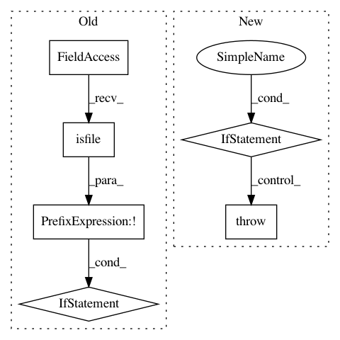

4bfebd857d9b94dff98e88c8cc59880f8fa54ec7,torchaudio/datasets/vctk.py,VCTK,__init__,#VCTK#Any#Any#Any#Any#Any#Any#Any#,67
Before Change
if download:
if not os.path.isdir(self._path):
if not os.path.isfile(archive):
checksum = _CHECKSUMS.get(url, None)
download_url(url, root, hash_value=checksum, hash_type="md5")
extract_archive(archive)
if not os.path.isdir(self._path):
raise RuntimeError(
After Change
archive = os.path.join(root, archive)
self._path = os.path.join(root, folder_in_archive)
if download:
raise RuntimeError(
"This Dataset is no longer available. "
"Please use `VCTK_092` class to download the latest version."
)
if not os.path.isdir(self._path):
raise RuntimeError(
"Dataset not found. Please use `VCTK_092` class "
"with `download=True` to donwload the latest version."
In pattern: SUPERPATTERN
Frequency: 3
Non-data size: 6
Instances
Project Name: pytorch/audio
Commit Name: 4bfebd857d9b94dff98e88c8cc59880f8fa54ec7
Time: 2020-08-19
Author: abhi.dubey011999@gmail.com
File Name: torchaudio/datasets/vctk.py
Class Name: VCTK
Method Name: __init__
Project Name: lingpy/lingpy
Commit Name: 997f7e378ffd48fd23107037534ad12cc471cdb6
Time: 2013-10-25
Author: frank@pc08447.Germanistik-Kunst.Uni-Marburg.DE
File Name: lingpy/basic/_parser.py
Class Name: _QLCParser
Method Name: _init_first
Project Name: NeuroTechX/moabb
Commit Name: 66b0061685aa10d124ef89c9a2f5ddeb7ce1ea1b
Time: 2018-01-24
Author: vjayaram@danube.is.localnet
File Name: moabb/datasets/download.py
Class Name:
Method Name: data_path